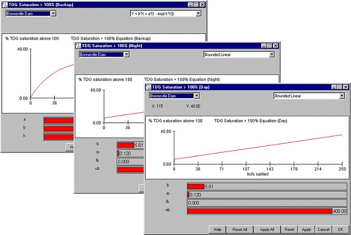

TDG Saturation Equations: Total Dissolved Gas Supersaturation
Selecting Dam TDG Saturation Equations opens three gas production equation windows--Day, Night and Backup--for defining the production of total dissolved gas supersaturation due to spilling at dams. The relationship between spill in kcfs and total dissolved gas above 100% saturation in the water is illustrated in the equation windows.
TDG Saturation Equations opens three gas production equation windows--Day, Night and Backup--for defining the production of total dissolved gas supersaturation due to spilling at dams. The relationship between spill in kcfs and total dissolved gas above 100% saturation in the water is illustrated in the equation windows.
Operations at many dams differ during the day and night hours as a result different gas production equations are specified for each dam. Night is defined as hours 0-6 and 18-24 in the model. If the gas production characteristics are not significantly different for Night and Day, then these equations are specified to be the same.
The Backup equation is intended to supply a third equation in case the spill value falls out of a reasonable range for the equations provided for Day and Night characteristics. For example, the linear equations work best for McNary and Bonneville under normal spill operations; however, extremely high spills could create gas levels too high in an unbounded linear equation. Spill values less than lb (lower bound) or greater than ub (upper bound) determine the switch to the Backup equation.
There are six different gas production curves to choose from in each of the gas production windows. Bounded Linear and Bounded Exponential are the new and recommended production equations. Gas spill 1, Gas spill 2, and the other two equations offer other choices for gas production characteristics but are not implemented at any dam. The Gas spill equations have been the calibrated equations in previous versions of COMPASS. In general, the gas production equation parameters have been calibrated to existing data sets, and we recommend that you do not alter these values.
- Bounded Linear
- b, m = model parameters determining the gas production
- lb, ub = lower and upper bound limits
- Bounded Exponential
- a, b, c = model parameters determining the gas production
- lb, ub = lower and upper bound limits
- Gas Spill models: models of supersaturation based on entrainment of gas bubbles in the tailrace (gas spill 1 and gas spill 2). These models are mechanistic, taking into account dam geometry and hydrodynamics, but do not respond to reservoir elevation changes. They differ from each other in the way each computes gas bubble entrainment.
- Empirical models: these are simple empirical models and not responsive to changes in reservoir elevation. The two equations contain the parameters:
- Y = tdg supersaturation in percent above 100% saturation
- X = river spilled in kcfs
- a, b, h or k = model coefficients set with sliders.
These are Equation Input windows.

TDG Supersaturation Equation windows